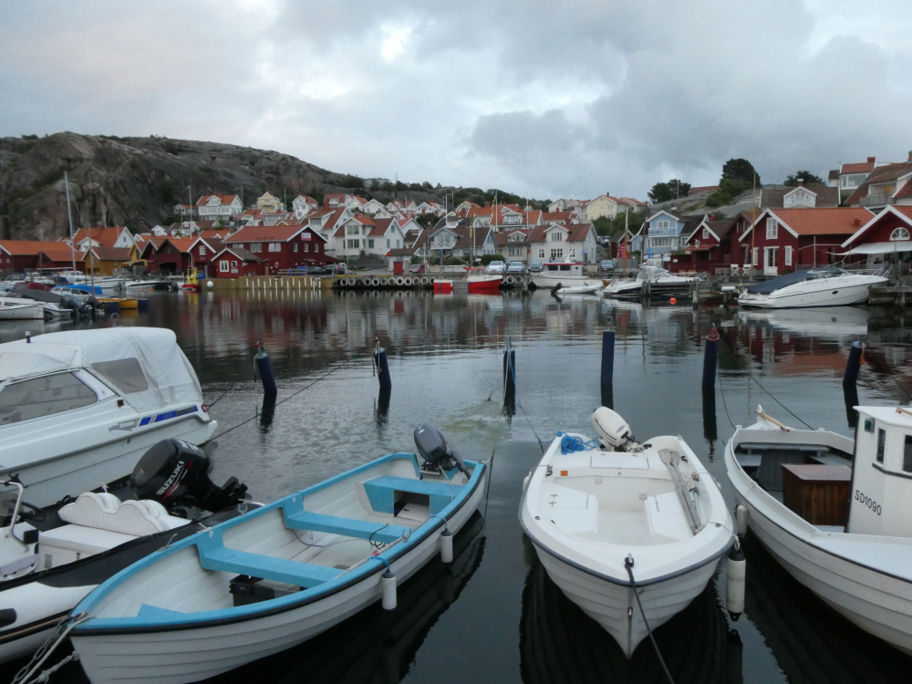
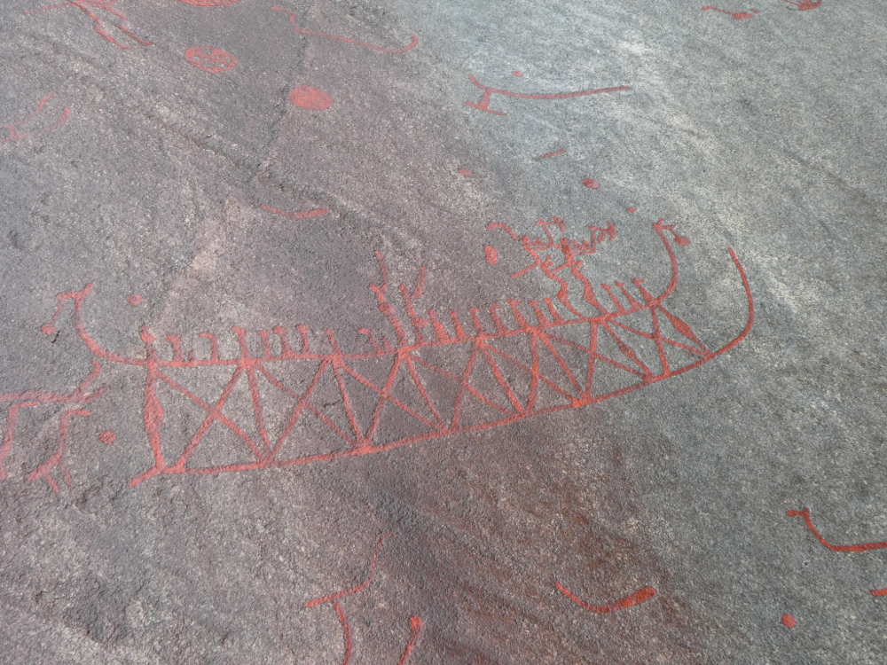
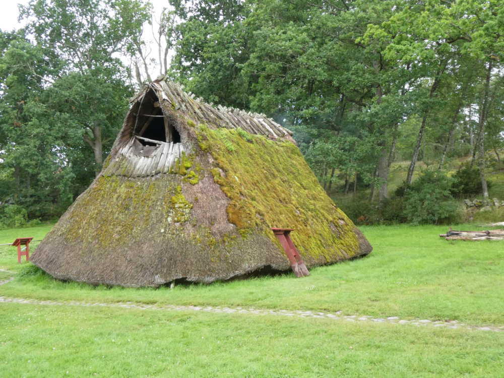

Tercer dia de ruta: Fjällbacka i museu Vitlycke
El tercer dia visitem Fjällbacka, una perla situada a la costa oest de Suècia. És famosa tant per la seva bellesa natural com per la seva connexió amb la llegendària actriu Ingrid Bergman. Aquest encantador poble pesquer es va convertir en el refugi d'estiu preferit de Bergman, que va quedar captivada pels seus paisatges idíl·lics i la serenor del lloc.
Passejant pel poble de Fjällbacka, trobaràs cases de fusta acolorides, carrers empedrats i un port animat que creen una atmosfera acollidora i atemporal.
Les vistes panoràmiques des de Fjällbacka són simplement espectaculars. Enfilant-se fins al cim del Vetteberget, una muntanya que s'eleva sobre el poble, els visitants poden gaudir d'una vista impressionant sobre l'arxipèlag de Bohuslän i les seves nombroses illes escampades pel mar. Aquestes vistes ofereixen un espectacle visual incomparable, especialment durant les postes de sol, quan el cel es tenyeix de colors càlids que reflecteixen sobre l'aigua.

Una visita a la regió no estaria completa sense explorar el museu Vitlycke, situat a poca distància en cotxe de Fjällbacka. Aquest museu és un tresor arqueològic que ofereix una visió fascinant de la vida durant l'edat de bronze a la zona. Els famosos petroglifs de Vitlycke, gravats en roca i que daten de fa més de 3.000 anys, narren històries de la vida quotidiana d'aquells temps. Aquestes imatges misterioses i intrigants proporcionen una connexió directa amb el passat i són un testimoni de l'enginy i la creativitat dels nostres avantpassats.
A més dels petroglifs, el museu presenta reconstruccions de cases de l'edat de Bronze, oferint als visitants una visió immersiva de com era la vida fa mil·lennis. Caminant per aquestes cases, un pot imaginar-se la vida en una època llunyana, sentint l'eco dels antics habitants en cada racó.
La combinació d'història rica i paisatges espectaculars converteix Fjällbacka i el museu Vitlycke en una parada obligatòria per a qualsevol amant de la cultura i la natura.